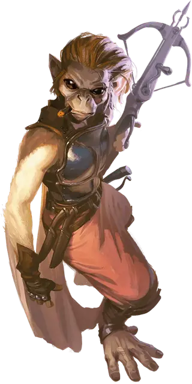

Хадози-воитель
Hadozee Warrior
Средний Гуманоид, любое мировоззрение

Класс Доспеха 16 (кираса)
Хиты 16 (3к8 + 3)
Скорость 30 футов, лазая 30 футов
| мод | спас | ||
|---|---|---|---|
| СИЛ | 11 | +0 | +0 |
| ЛОВ | 16 | +3 | +5 |
| ТЕЛ | 13 | +1 | +3 |
| мод | спас | ||
|---|---|---|---|
| ИНТ | 10 | +0 | +0 |
| МДР | 13 | +1 | +1 |
| ХАР | 12 | +1 | +1 |
Навыки Восприятие +3, Выживание +5, Скрытность +5
Чувства пассивное Восприятие 13
Языки Общий, Язык Хадози
Опасность 1/2 (100 опыта)
Бонус мастерства +2
Особенности
Планирование. Если хадози дееспособен и не носит тяжёлую броню, то может растянуть свои кожные складки, чтобы переместиться на 5 футов по горизонтали за каждый фут спуска.
Действия
Мультиатака. Хадози совершает две атаки Коротким мечом.
Короткий меч. . Рукопашная атака оружием: +5 к попаданию, досягаемость 5 футов, одна цель. Попадание: 6 (1к6 + 3) колющего урона.
Лёгкий арбалет. . Дальнобойная атака оружием: +5 к попаданию, дистанция 80/320 фт., одна цель. Попадание: 12 (2к8 + 3) колющего урона.
Реакции
Безопасный спуск. Если хадози должен получить урон от падения, он расправляет кожные складки и уменьшает этот урон до нуля. Хадози не должен носить тяжелый доспех.
Невероятное уклонение. Если по хадози атакой попадает нападающий, которого он может видеть, хадози может уменьшить урон от этой атаки вдвое.
Описание
Хадози-воители зарабатывают на жизнь в качестве наёмников, иногда в компании пиратов. Отряды воителей часто носят красочные названия, такие как «Парящие хадози», «Зажигательные тупаки» и «Ночные воюны».
Хадози
Хадози — стройные, высоко адаптивные, похожие на обезьян гуманоиды с своим собственным языком. Их ноги такие же ловкие как руки. На них даже есть отстоящие большие пальцы. С их рук и ног свисают кожные складки. Растягиваясь между вытянутыми конечностями, они позволяют хадози планировать.
В своём родном мире — Язире, хадози жили высоко на деревьях, избегая крупных наземных хищников. В наши дни Дикий космос стал домом для большинства из них. Хадози часто служат наёмным экипажем для других космических народов. Там находится применение их природной способности к лазанию и планированию. Хадози, привыкшие к космическим путешествиям, используют гравитационную плоскость корабля, чтобы получить преимущество в бою. Прыгая с одного борта корабля, они планируют под килем, и возникают с противоположного борта.